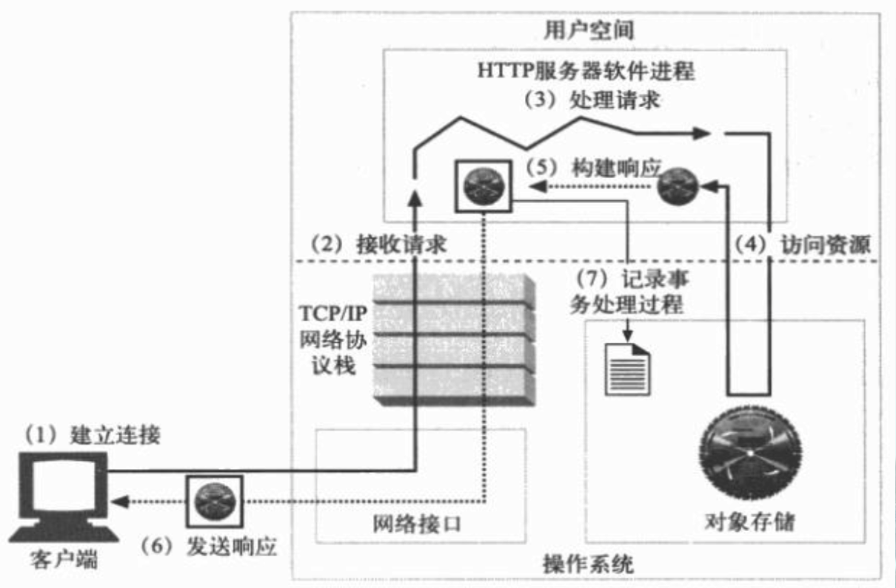
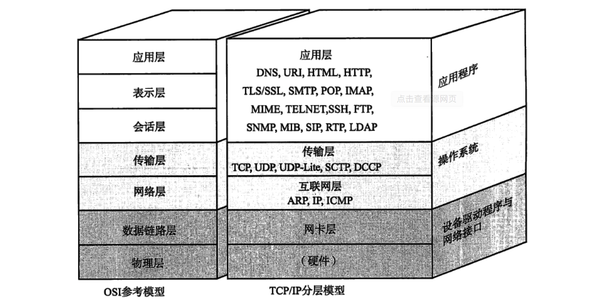
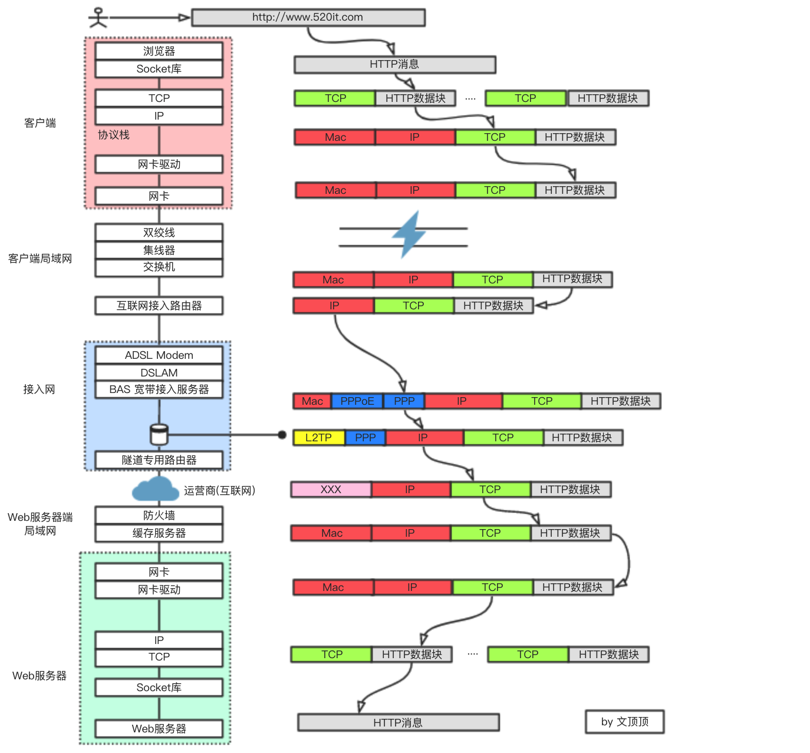
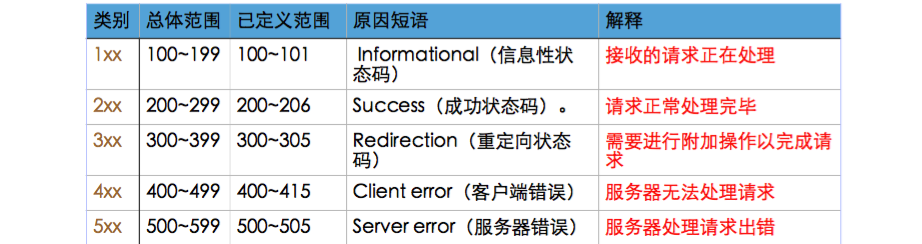

网络编程系列 网络基础知识和HTTP协议
第一章 网络编程基本概念
1.1 客户端和服务器的基本概念
客户端（Client）能从服务器获取资源为客户提供服务的程序(设备)。服务器（Server）为客户端提供服务、提供数据、提供资源的机器。
说明：我们作为前端开发工程师，主要的精力都放在前端开发部分。
1.2 服务器简单介绍
1.2.1 服务器简单说明
服务器其实本身也是电脑，只不过比我们的电脑配置更高，且一般要求24小时不断电，不关机。服务器是专门用于存储数据电脑， 访问者可以访问服务器获得服务器上存储的资源。
服务器其实就是一台”提供了某种服务功能”的电脑。
思考 普通电脑如何能作为服务器使用？
1.2.2 HTTP服务器
（1）如何让电脑可以聊天?听歌?浏览网页?
【1】 想让电脑提供聊天服务, 可以安装相应的聊天软件，比如QQ、微信等
【2】 想让电脑可以提供听歌服务, 可以安装相应音乐播放软件，比如QQ音乐、网易云音乐等。
【3】 想让电脑可以提供浏览网页服务, 可以安装相应浏览网页软件，比如谷歌浏览器、IE浏览器等。
（2）如何让电脑提供HTTP服务？
服务器有很多种类型和分类方式，如果按照类型来划分大概可以分成：
文件服务器、数据库服务器、邮件服务器、Web 服务器等多种，我们经常接触到的是web服务器，也称为HTTP服务器；
如果想让电脑为我们提供HTTP服务，那么可以安装HTTP服务相关软件, 例如: Apache、IIS、Tomcat、Nginx、NodeJS等；
安装了HTTP服务软件的电脑, 我们称之HTTP服务器(Web服务器)。
补充：常见的服务器软件
1 | 文件服务器软件（Server-U、FileZilla、VsFTP等）； |
1.2.3 本地服务器和外网服务器
如果按照软件开发阶段来分，服务器可以分为远程服务器和本地服务器。
【1】 远程服务器
别名：外网服务器、正式服务器
使用阶段：应用上线后使用的服务器
使用人群：供全体用户使用
速度：取决于服务器的性能、用户的网速
【2】 本地服务器
别名：内网服务器、测试服务器
使用阶段：应用处于开发、测试阶段使用的服务器
使用人群：仅供公司内部的开发人员、测试人员使用
速度：由于是局域网，所以速度飞快，有助于提高开发测试效率
1.3 访问网页的原理和过程。
Web的内容都是存储在Web服务器上面的。而Web服务器通常所使用的是HTTP协议，因此Web服务器有时也被称为“HTTP服务器”。客户端和Web服务器之间进行通信需要经历请求和响应两个过程。简单说，就是客户端向服务器发送一个请求索要数据，而服务器端需要对该请求作出响应，即把客户端索要的资源（数据）返回。
1.3.1 浏览器访问网页原理
【1】访问网页时是有真实的、物理的文件传输的。
【2】 网页不是一个文件，而是一堆文件组成，它们保存到Web服务器上。
【3】 客户端会先发送网络请求，向服务器端索要对应的文件。
【4】 服务器接收到请求后，根据请求查找对应的资源并传输给客户端。
【5】 客户端接收到响应后，会解析服务器返回的结果，将结果显示出来。
1.3.2 浏览器请求数据的过程
【1】 按下回车时浏览器根据输入的URL地址发送请求报文给服务器。
【2】 服务器接收到请求报文，会对请求报文进行处理。
【3】 服务器将处理完的结果通过响应报文返回给浏览器。
【4】浏览器解析服务器返回的结果，将结果显示出来。
第二章 HTTP协议
2.1 URL简单介绍
2.1.1 客户端如何找到对应的服务器
网络中部署着各种各样的服务器，比如腾讯的服务器、百度的服务器，那么问题来了？客户端如何找到想要连接的服务器?
答案是：客户端通过URL找到想要连接的服务器。
2.1.2 URI和URL
URI：全称是Uniform Resource Identifier（统一资源标识符），用于标识某一互联网资源。
URL：全称是Uniform Resource Location（统一资源定位符），用于表示资源的地点。通过1个URL，能找到互联网上唯一的1个资源，URL就是资源的地址、位置，互联网上的每个资源都有一个唯一的URL。
URN:全称是Uniform Resource Name（统一资源名称），唯一标识一个实体的标识符，但是不能给出实体的位置。
URL和URI的关系：URL是URI的子集。
2.1.3 URL的基本格式
URL的基本格式为： 协议://主机地址/资源路径
示例1：http://www.baidu.com/img/logo.png
示例2：http://202.108.22.5/img/bdlogo.gif
- 协议：不同的协议，代表着不同的资源查找方式、资源传输方式。
- 主机地址：存放资源的主机（服务器）的IP地址（域名）。
- 资源路径：资源在主机（服务器）中的具体位置。
🌧 补充
① 通用格式协议://用户名:密码@主机地址:端口号/路径?查询字符串#资源片段
② 常见协议：
（1）HTTP协议访问的是远程的网络资源,网络开发中最常用的协议
（2）file协议访问的是本地计算机上的资源。
（3）mailto协议访问的是电子邮件地址。
（4）FTP协议访问的是共享主机的文件资源。
1 |
|
2.2 HTTP协议简单介绍
2.2.1 协议就是规则
在网络编程领域我们可能会用到各种不一样的协议，但所有的协议本质上都是规则。
TCP/IP协议簇
为了方便我们学习和理解HTTP协议，这里先介绍TCP/IP协议簇。
通常意义上，我们使用的网络服务是在TCP/IP协议簇的基础上运作的，而HTTP协议属于它内部的一个子集。
计算机与网络设备需要通信，双方就必须要基于相同的方法，比如具体应该如何探测通信目标，由哪一方面发起通信，使用什么语言进行沟通等等，所有的这一切都需要规则。我们则把这些规则称之为协议（potocol）。
在协议中规定了很多的各式各样的内容，如选址方法，双方建立通信的顺序等。这些协议如（ICMP DNS TCP FTP HTTP SNMP PPPoE IP FDDI）等，通常我们把TCP/IP认为是在IP协议的通信过程中，使用到的协议簇的统称。
TCP 协议簇采用分层设计思想实现，其中，与HTTP关系密切的协议有TCP、IP、DNS等协议。
1 | IP协议 |
2.2.2 HTTP协议简单介绍
HTTP的全称是Hypertext Transfer Protocol，即超文本传输协议。客户端在访问网络资源的时候，经常需要用到HTTP协议。
比如访问公司的主页，获取网易新闻数据，获取优酷的视频数据等都需要用到HTTP协议。
HTTP协议的作用
① 规定客户端和服务器之间的数据传输格式
② 让客户端和服务器能有效地进行数据沟通
HTTP协议的特点
① 简单快速
因为HTTP协议简单，所以HTTP服务器的程序规模小，而且通信速度很快。
② 方便灵活
HTTP协议允许传输各种各样的数据，视频|音频|文本|图片等。
③ 明文传输
HTTP协议在进行请求和响应的时候数据以明文方式传输。
2.3 HTTP协议的版本发展
① HTTP协议 0.9版本
HTTP协议0.9版本 于1990年问世，那时的HTTP并没有作为正式的标准被建立。1991年 Tim Berners-Lee概述了该协议的动机，并罗列了几条宏观的涉及目标，如支持文件传输，能够请求对超文本文档的索引搜索，格式化协商机制以及能够把客户端引导 至不同的服务器等，他构建了简单原型并实现了部分功能。因为最终的成品只实现了部分预期的功能,因此相应的协议也被非官方的成为HTTP0.9。以1991年为起点，HTTP协议在随后的几年中得到了快速的发展。
HTTP0.9的主要功能和特点
- 客户端|服务端,请求|响应协议;
- ASCII协议,运行于TCP/IP链接之上;
- 涉及用来传输超文本文档(HTML) ;
- 服务器和客户端之间的连接在每次请求之后都会关闭。
② HTTP协议 1.0版本
1996年，HTTP工作组发布了RFC 1945，解释和说明了当时很多HTTP1.0实现的 公共用法。不过,该RFC是参考性的，也就是说HTTP1.0 并不是一个正式的规范或者是互联网标准。
RFC1945 - Hypertext Transfer Protocol — HTTP/1.0
http://www.ietf.org/rfc/rfc1945.txt
HTTP协议1.0版本后，服务器的响应对象不再局限与超文本而可以是任意类型：如HTML文件、纯文本文件，图片等。
HTTP1.0 协议的关键变化
- 请求可以由多行首部组成;
- 响应对象前面添加了响应状态行;
- 响应对象也拥有了自己的首部字段 ;
- 响应对象不再局限于超文本
- 服务器与客户端之间的连接在每次请求之后都会关闭。
③ HTTP协议 1.1版本
1997年1月，定义了HTTP协议1.1版本标准的RFC 2068发布。在1999年6月RFC2626发布, 又在标准中集合了很多的更新和改进。HTTP/1.1标准厘清了之前版本中很多有歧义的地方，且加入了很多重要的性能优化：如持久连接，分块编码传输，字节范围请求，增强的缓存机制，传输编码以及请求管道等。
RFC2616 - Hypertext Transfer Protocol — HTTP/1.1
http://www.ietf.org/rfc/rfc2616.txt
HTTP/1.1 最关键的变化在于改变了HTTP协议的语义,默认使用持久连接，该版本是目前广泛使用的版本。
④ HTTP协议 2.0版本
RFC2626自发布以来，一直都是互联网大发展的基石。从最开始的HTTP0.9到今天，HTTP已经发展成为可以在任何领域使用的核心协议。今天，用户和开发者都迫切想通过HTTP协议来实现几乎实时的响应速度和传输性能，而要满足这样的需求仅仅对既有的HTTP1.1协议进行修补和更新是不够的。 因此，HTTP工作组于2012年宣布开发HTTP2.0 。
HTTP2.0版本的开发保证了与 HTTP 1.1 的完全语义兼 容,最初考虑的是 Google SPDY 协议、微软的 SM 协议和 Network-Friendly HTTP 更新。最终各方推荐了 SPDY 协议，并在此基础上进行了相应更新。对于HTTP2.0 而言，其主要目标是改进传输性能,实现低延迟和高吞吐量。
官方设置的重要里程碑:
2012年3月：征集HTTP2.0建议;
2012年9月：HTTP2.0 的第一个草案发布;
2013年7月：HTTP2.0 草案的第一个实现发布;
2014年4月：工作组最后征集HTTP2.0 的意见;
2014年11月：将HTTP2.0作为建议标准提交给IESG。
备注
HTTP2.0最新草案和状态，请参考
https://tools.ietf.org/html/draft-ietf-httpbis-http2-17
HTTP2.0 中文版本,请参考
http://www.oschina.net/question/1397765_172789
HTTP2.0 关键设计和技术目标
- 请求优先级；
- 服务器推送；
- 首部压缩；
- 二进制分帧层
- 多向请求和响应；
第三章 请求-响应模式
3.1 网络通信的请求-响应模式
完整的http通信可以分为两个部分：请求和响应。
请求：客户端向服务器索要数据的过程。响应：服务器把客户端索要数据返回的过程。

网络通信过程中数据包的传输过程请参考下图

3.2 HTTP报文简单介绍
3.2.1 HTTP报文的结构
HTTP报文由两部分组成：报文首部和报文主体。
基于HTTP通信的请求-响应模式，我们又可以把HTTP报文区分为请求报文和响应报文，它们本身的结构和HTTP报文结构一致。
3.2.2 请求报文
HTTP请求报文由两部分组成：请求首部（请求行 + 请求头）和请求主体。
请求行：表明请求的方法和资源等信息。请求头：存放的是对客户端以及请求本身的描述信息。请求体：如果是POST请求，则存放发送给服务器的参数。
请求头信息示例：
1 | User-Agent：浏览器的具体类型 |
3.2.3 响应报文
HTTP响应报文由两部分组成：响应首部（状态行 + 响应头）和响应主体。
状态行：表明网络请求的状态。响应头：存放的是对服务器以及响应本身的描述信息。响应体：返回给客户端的具体数据。
响应头信息示例：
1 | Server:服务器软件的信息和版本。 |
3.3 网络请求方法
3.3.1 网络请求方法介绍
在HTTP/1.1协议中，定义了多种发送http请求的方法，分别是：GET、POST、OPTIONS、HEAD、PUT、DELETE、TRACE、CONNECT、PATCH。
根据HTTP协议的设计初衷，不同的方法对资源有不同的操作方式
1 | GET方法：查询数据 |
在实际的项目开发中，最常用的是GET和POST请求，其实实际上GET和POST都能办到增删改查。
参数的概念：参数就是传递给服务器的具体数据，如登录的帐号和密码
3.3.2 GET请求和POST请求
GET和POST的主要区别表现在参数的处理方式不同
GET请求：提交的参数直接以查询字符串的方式跟在请求URL的后面。POST请求：参数存放在请求体中进行提交。
GET请求和POST请求对比
① 参数处理方式不同。
② 安全性不同。
③ 大小限制。
请求路径示例：
GET:http://www.wendingding.com?username=wen&password=123456
POST:http://www.wendingding.com
3.4 响应状态码
3.4.1 HTTP响应状态码介绍
响应状态码的职责是当客户端向服务器端发送请求时,描述返回的请求结果。借助状态码，用户可以知道服务器端是正常处理了请求，还是出现了错误。
常见的状态码比如200 OK 或者404 not found等。
状态码以3位数字+原因短语组成。
数字中的第一位指定了响应的类别, 后两位无分类。
3.4.2 HTTP响应状态码的类别
